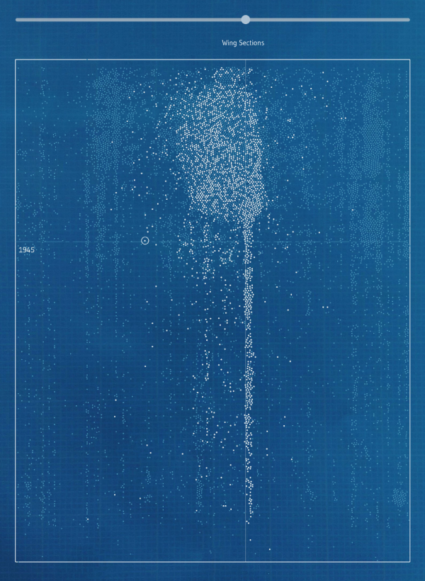
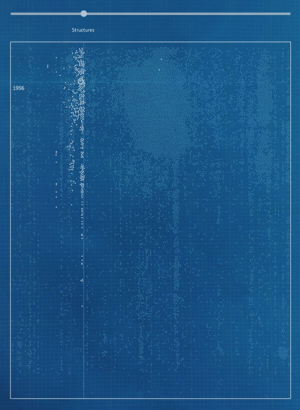

During World War I aircraft technology was in its infancy and it prompted the United States to establish the National Advisory Committee for Aeronautics (NACA) in 1915. Subsequently great advances were made by scientists and aviators and NACA advanced commercial and military aviation through research and development activities. By the time World War II broke out, NACA was well established as a leading aerospace research institution.
When the the space race began in earnest in the late 50's, the NACA agency’s proven research model was ideal for advancing development from aerospace to space. In 1958 the National Aeronautics and Space Administration (NASA) was created, turning the NACA into NASA. This project showcases the entire research paper collection using document metadata to show the context of the papers generated from 1915 to 1959.
VISUALIZING THE NACA LIBRARY: SEARCH EXAMPLES
Subject Example 1: Wing sections
Subject Example 2: Structures
EXPLORE THE COLLECTION: